ОБРАНА ОБЛАСТЬ
Плечовий комплекс
Анатомія, найпоширеніші стани, навантаження, реабілітація та спосіб читати наукові дані без спрощення до «працює / не працює».
АТЛАС EVIDENCE · v0.4
Анатомія, яку можна звірити з джерелами. Оберіть область тіла, щоб перейти від структури до симптомів, навантаження, реабілітації та наукових даних.

ОБРАНА ОБЛАСТЬ
Анатомія, найпоширеніші стани, навантаження, реабілітація та спосіб читати наукові дані без спрощення до «працює / не працює».